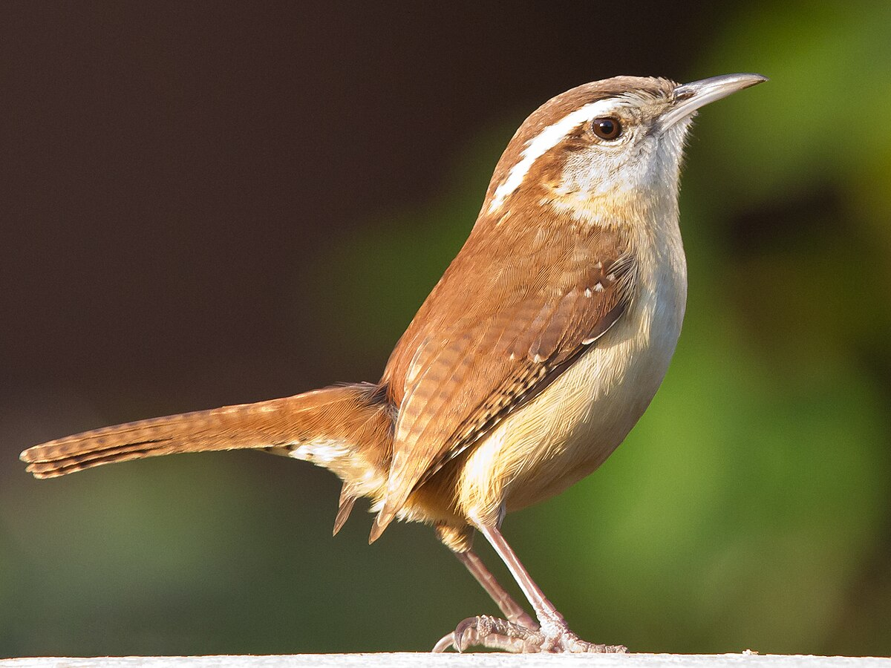

Bird Identification

Blue Jay
Known for its bright blue feathers and loud calls.
Known for its bright blue feathers and loud calls.

Northern Cardinal
Bright red plumage and beautiful songs make this bird easy to identify.
Bright red plumage and beautiful songs make this bird easy to identify.

American Robin
Recognized by its orange chest and cheerful tune.
Recognized by its orange chest and cheerful tune.

Carolina Wren
A small, energetic brown bird known for its loud "teakettle" song.
A small, energetic brown bird known for its loud "teakettle" song.